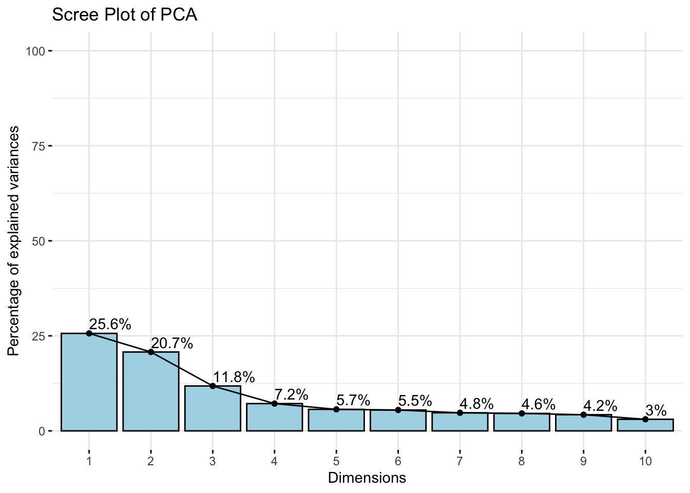
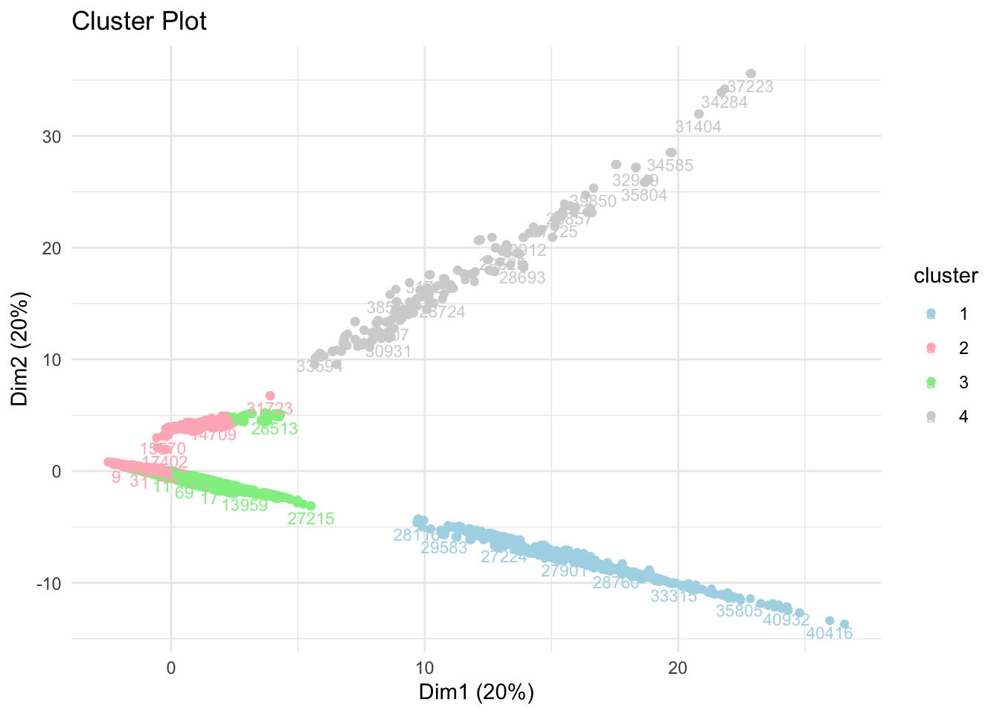
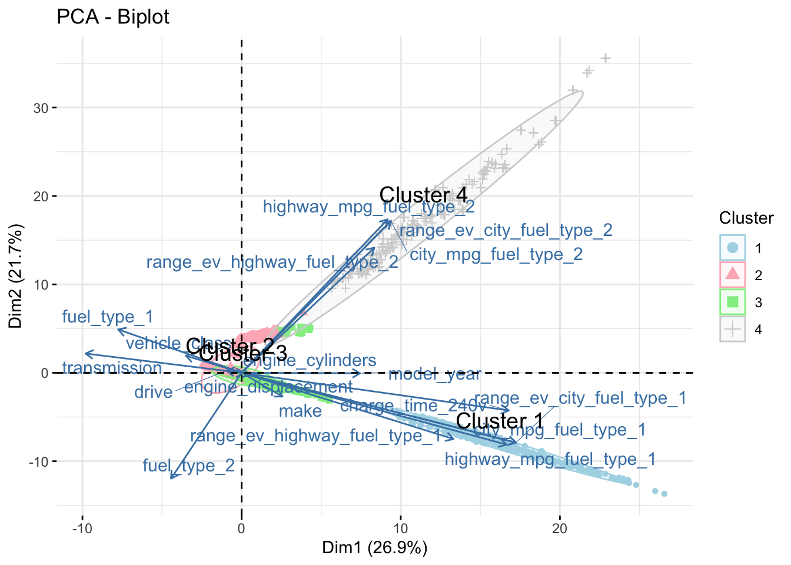

source(here::here("scripts","setup.R"))
library(data.table)
data_cleaned <- fread(here::here("data", "data_cleaned.csv"))Unsupervised Learning
In order to see the link between the features, we can use a dimension reduction technique such as the Principal Component Analysis, aiming to link the features according to their similarities accross instances and combine features in fewer dimensions.
Principal Component Analysis
Biplot
# Assuming your data frame is named data_cleaned
data_prepared <- data_cleaned %>%
mutate(across(where(is.character), as.factor)) %>%
mutate(across(where(is.factor), as.numeric)) %>%
scale() # Standardizes numeric data including converted factors
pca_results <- PCA(data_prepared, graph = FALSE)
summary(pca_results)
Call:
PCA(X = data_prepared, graph = FALSE)
Eigenvalues
Dim.1 Dim.2 Dim.3 Dim.4 Dim.5 Dim.6 Dim.7
Variance 4.844 3.900 2.106 1.222 0.993 0.866 0.855
% of var. 26.913 21.666 11.700 6.790 5.519 4.811 4.750
Cumulative % of var. 26.913 48.579 60.279 67.069 72.588 77.399 82.149
Dim.8 Dim.9 Dim.10 Dim.11 Dim.12 Dim.13 Dim.14
Variance 0.827 0.725 0.539 0.460 0.309 0.179 0.131
% of var. 4.595 4.028 2.996 2.557 1.718 0.992 0.729
Cumulative % of var. 86.744 90.773 93.769 96.326 98.044 99.036 99.765
Dim.15 Dim.16 Dim.17 Dim.18
Variance 0.034 0.008 0.000 0.000
% of var. 0.188 0.047 0.000 0.000
Cumulative % of var. 99.953 100.000 100.000 100.000
Individuals (the 10 first)
Dist Dim.1 ctr cos2 Dim.2 ctr
1 | 3.335 | -1.044 0.001 0.098 | 0.068 0.000
2 | 3.410 | -1.208 0.001 0.125 | 0.197 0.000
3 | 3.544 | -1.448 0.001 0.167 | 0.268 0.000
4 | 2.789 | -1.245 0.001 0.199 | 0.155 0.000
5 | 2.742 | -1.166 0.001 0.181 | 0.112 0.000
6 | 2.742 | -1.166 0.001 0.181 | 0.112 0.000
7 | 2.855 | -1.129 0.001 0.156 | 0.029 0.000
8 | 2.903 | -1.317 0.001 0.206 | 0.126 0.000
9 | 4.943 | -2.152 0.002 0.190 | 0.605 0.000
10 | 3.448 | -2.115 0.002 0.376 | 0.596 0.000
cos2 Dim.3 ctr cos2
1 0.000 | -0.285 0.000 0.007 |
2 0.003 | 2.415 0.007 0.502 |
3 0.006 | 2.351 0.006 0.440 |
4 0.003 | 0.439 0.000 0.025 |
5 0.002 | 0.407 0.000 0.022 |
6 0.002 | 0.407 0.000 0.022 |
7 0.000 | 0.239 0.000 0.007 |
8 0.002 | 0.285 0.000 0.010 |
9 0.015 | -0.393 0.000 0.006 |
10 0.030 | 1.207 0.002 0.123 |
Variables (the 10 first)
Dim.1 ctr cos2 Dim.2 ctr cos2
make | 0.129 0.345 0.017 | -0.135 0.469 0.018 |
model_year | 0.375 2.900 0.141 | -0.003 0.000 0.000 |
vehicle_class | -0.176 0.643 0.031 | 0.098 0.244 0.010 |
drive | -0.048 0.047 0.002 | 0.013 0.004 0.000 |
engine_cylinders | 0.007 0.001 0.000 | 0.000 0.000 0.000 |
engine_displacement | 0.025 0.013 0.001 | -0.017 0.007 0.000 |
transmission | -0.494 5.028 0.244 | 0.110 0.310 0.012 |
fuel_type_1 | -0.391 3.149 0.153 | 0.247 1.568 0.061 |
city_mpg_fuel_type_1 | 0.868 15.542 0.753 | -0.397 4.047 0.158 |
highway_mpg_fuel_type_1 | 0.838 14.497 0.702 | -0.409 4.284 0.167 |
Dim.3 ctr cos2
make -0.445 9.407 0.198 |
model_year -0.033 0.053 0.001 |
vehicle_class 0.431 8.813 0.186 |
drive 0.148 1.044 0.022 |
engine_cylinders 0.772 28.267 0.595 |
engine_displacement 0.877 36.535 0.769 |
transmission -0.129 0.795 0.017 |
fuel_type_1 -0.282 3.771 0.079 |
city_mpg_fuel_type_1 -0.116 0.634 0.013 |
highway_mpg_fuel_type_1 -0.221 2.326 0.049 |fviz_pca_biplot(pca_results,
geom.ind = "point", # To show data points
geom.var = c("arrow", "text"), # To show variable vectors and labels
col.ind = "cos2", # Color by the quality of representation
gradient.cols = c("#00AFBB", "#E7B800", "#FC4E07"), # Colors
repel = TRUE # Avoid text overlapping
)The biplot shows several information. First, the two dimensions epxlain almost 50% of the total variance of the data. Then, each point represents an observation and its color represent the quality of the representation of the variables. Looking at the cos2 gradient, the redder the dot, the better the quality of representation. Then, the arrows (or vectors) represent the features. The vectors pointing in similar directions represent some positive correlations, whereas the ones going opposite represent negative correlations. Orthogonal variables are not correlated.
Taking all of these into account, we can interpret this graph in the following way: we notice that the variables linking the mpg and the range for a fuel type (e.g. fuel type 1) go in the same direction and all seem to be positively correlated, and they are uncorrelated to the same characteristics of the other fuel type (e.g. fuel type 2). Also, the mpg and range seem to be negatively correlated to their own fuel type. Moreover, fuel type 1 seem to be lin
Screeplot
# Generating the scree plot from PCA results
fviz_eig(pca_results,
addlabels = TRUE, # Adds labels to the plot indicating the percentage of variance
ylim = c(0, 100), # Optional: Sets the limits of the y-axis to make the plot easier to interpret
barfill = "lightblue", # Color of the bars
barcolor = "black", # Color of the borders of bars
main = "Scree Plot of PCA") # Title of the plot
Taking the screeplot into account, 6 dimensions are needed to reach at least 75%, meaning the features might be relatively independent. It is alredy shown in the biplot above, as most arrows in the middle seem to be shorter and the cos2 are low, meaning that the features might be more linked to other dimensions than the first 2 dimensions. To check further the correlation, we can use a heatmap.
Heatmap ???
library(reshape2)
# Assuming data_prepared has been previously defined and standardized
cor_matrix <- cor(data_prepared) # Calculate correlation matrix
# Melt the correlation matrix for ggplot2
melted_cor_matrix <- melt(cor_matrix)
# Heatmap with all correlation coefficients displayed
ggplot(melted_cor_matrix, aes(Var1, Var2, fill = value)) +
geom_tile(color = "white") + # Add white lines to distinguish the tiles
geom_text(aes(label = sprintf("%.2f", value)), color = "black", size = 3.5) + # Always display labels
scale_fill_gradient2(low = "lightblue", high = "darkblue", mid = "blue", midpoint = 0, limit = c(-1,1),
name = "Spearman\nCorrelation") + # Use gradient2 for a diverging color scheme
theme_minimal() +
theme(axis.text.x = element_text(angle = 45, hjust = 1),
axis.text.y = element_text(angle = 45, hjust = 1),
plot.title = element_text(hjust = 0.5), # Center the title
plot.title.position = "plot") +
labs(x = 'Variables', y = 'Variables',
title = 'Correlations Heatmap of Variables') # Adjust the title and labels as needed
This heatmap indicates the correlation between the variables.
Clustering
# Extract PCA coordinates for clustering
pca_coords <- pca_results$ind$coord
# Using the Elbow Method to determine the number of clusters
set.seed(123) # Ensure reproducibility
wss <- sapply(1:15, function(k) {
kmeans(pca_coords, centers = k, nstart = 25)$tot.withinss
})
plot(1:15, wss, type = "b", pch = 20, frame = FALSE,
xlab = "Number of clusters K", ylab = "Total within-clusters sum of squares")
# Assuming the optimal number of clusters from the plot is, e.g., 2
k <- 4
# Perform k-means clustering using PCA-transformed data
set.seed(123) # For reproducibility
km_result <- kmeans(pca_coords, centers = k, nstart = 25)
# Add cluster results and observation names to the PCA coordinates data frame
pca_coords_df <- as.data.frame(pca_coords)
pca_coords_df$cluster <- factor(km_result$cluster)
pca_coords_df$name <- rownames(data_cleaned) # Assuming rownames are the observation names
# Visualize the clusters using PCA and label points with observation names
ggplot(pca_coords_df, aes(x = Dim.1, y = Dim.2, color = cluster, label = name)) +
geom_point() +
geom_text(check_overlap = TRUE, vjust = 1.5, size = 3) + # Adjust size and vjust as needed
labs(title = "Cluster Plot", x = "Dim1 (20%)", y = "Dim2 (20%)") +
scale_color_manual(values = c("lightblue", "lightpink", "lightgreen", "lightgrey")) + # Adjust colors as needed
theme_minimal() +
theme(legend.position = "right") # Adjust legend position if necessary
## BIPLOT + CLUSTER
# Calculate cluster centers for labeling
cluster_centers <- aggregate(pca_coords_df[, 1:2], by = list(cluster = pca_coords_df$cluster), FUN = mean)
# Visualize the PCA biplot with cluster annotations
fviz_pca_biplot(pca_results,
geom.ind = "point", # To show data points
geom.var = c("arrow", "text"), # To show variable vectors and labels
col.ind = factor(km_result$cluster), # Color by cluster (as a factor)
palette = c("lightblue", "lightpink", "lightgreen", "lightgrey"), # Adjust colors as needed
addEllipses = TRUE, # Add concentration ellipses
ellipse.level = 0.95, # Confidence level for ellipses
repel = TRUE, # Avoid text overlapping
legend.title = "Cluster") +
geom_text(data = cluster_centers, aes(x = Dim.1, y = Dim.2, label = paste("Cluster", cluster)),
color = "black", size = 5, vjust = -1) +
labs(title = "PCA - Biplot",
x = paste("Dim1 (", round(pca_results$eig[1,2], 1), "%)", sep = ""),
y = paste("Dim2 (", round(pca_results$eig[2,2], 1), "%)", sep = ""))
Using a clustering methods allow us to see the number of clusters that share similarities. Here, the elbow indicates that the optimal number of clusters should be 4. When comparing it with the biplot (last graph), we clearly notice that cluster 1 refers to the characteristics (range and mpg) for fuel 1 and same for fuel 4. Cluster 2 and 3 are packed towards the center and it is harder to see which features are similar, which is explainable with the fact that we would need around 6 dimensions to explain the total variance. We can suppose that cluster 2 refers to the class and the vehicle transmission, whereas cluster 3 focuses on engines and cylinders.